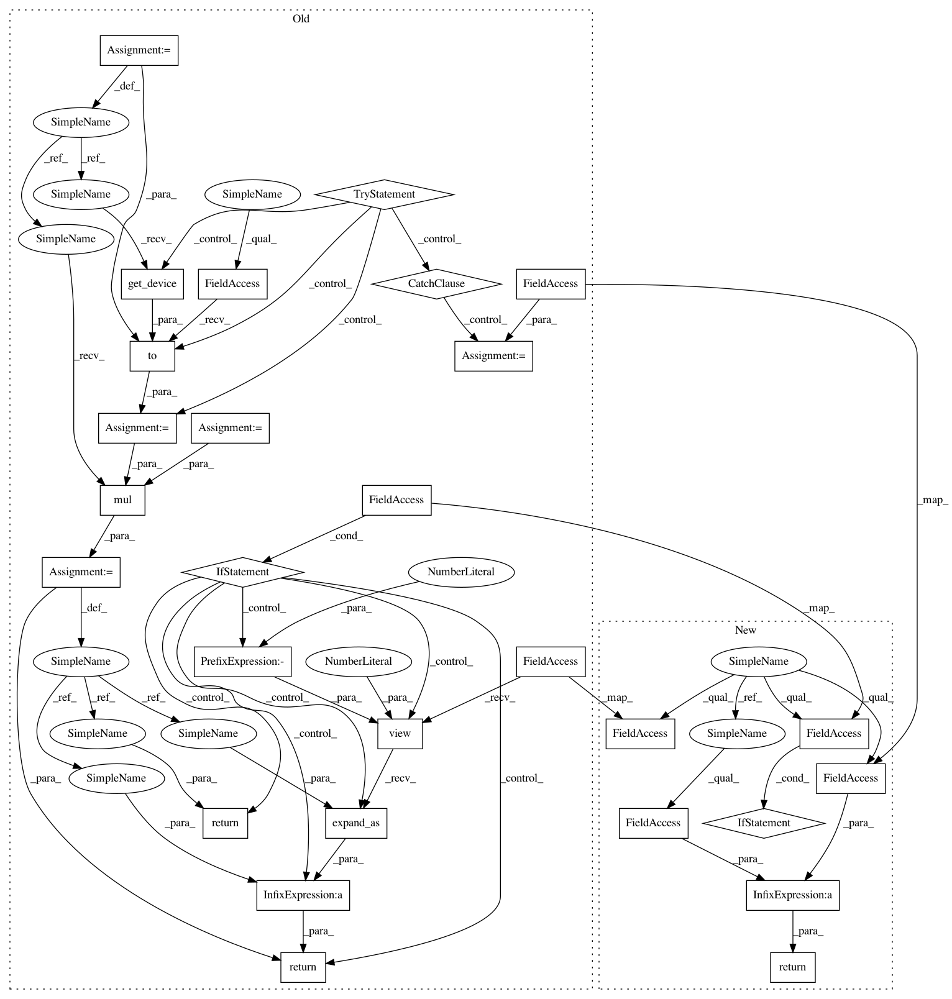

6fa5098c419e83e1c4d2d55b492eafdfe6a006ef,pro_gan_pytorch/CustomLayers.py,_equalized_deconv2d,forward,#_equalized_deconv2d#Any#,79
Before Change
:param x: input
:return: y => output
try:
dev_scale = self.scale.to(x.get_device())
except RuntimeError:
dev_scale = self.scale
x = self.deconv(x.mul(dev_scale))
if self.use_bias:
return x + self.bias.view(1, -1, 1, 1).expand_as(x)
return x
class _equalized_linear(th.nn.Module):
Linear layer using equalized learning rate
After Change
fan_in = c_in // value of fan_in for deconv
self.scale = sqrt(2) / sqrt(fan_in)
def forward(self, x):
forward pass of the layer
:param x: input
:return: y => output
from torch.nn.functional import conv_transpose2d
return conv_transpose2d(input=x,
weight=self.weight * self.scale, // scale the weight on runtime
bias=self.bias if self.use_bias else None,
stride=self.stride,
padding=self.pad)
def extra_repr(self):
return ", ".join(map(str, self.weight.shape))
In pattern: SUPERPATTERN
Frequency: 3
Non-data size: 28
Instances
Project Name: akanimax/pro_gan_pytorch
Commit Name: 6fa5098c419e83e1c4d2d55b492eafdfe6a006ef
Time: 2018-12-10
Author: akanimax@gmail.com
File Name: pro_gan_pytorch/CustomLayers.py
Class Name: _equalized_deconv2d
Method Name: forward
Project Name: akanimax/pro_gan_pytorch
Commit Name: 6fa5098c419e83e1c4d2d55b492eafdfe6a006ef
Time: 2018-12-10
Author: akanimax@gmail.com
File Name: pro_gan_pytorch/CustomLayers.py
Class Name: _equalized_linear
Method Name: forward
Project Name: akanimax/pro_gan_pytorch
Commit Name: 6fa5098c419e83e1c4d2d55b492eafdfe6a006ef
Time: 2018-12-10
Author: akanimax@gmail.com
File Name: pro_gan_pytorch/CustomLayers.py
Class Name: _equalized_deconv2d
Method Name: forward
Project Name: akanimax/pro_gan_pytorch
Commit Name: 6fa5098c419e83e1c4d2d55b492eafdfe6a006ef
Time: 2018-12-10
Author: akanimax@gmail.com
File Name: pro_gan_pytorch/CustomLayers.py
Class Name: _equalized_conv2d
Method Name: forward